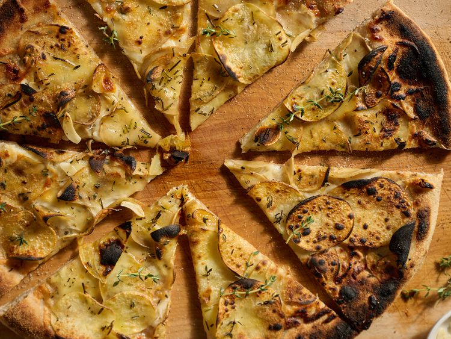

Potato Pizza

Description
This recipe was born on a night when I hadn't gone grocery shopping, didn't have any tomato sauce or traditional pizza fixins on hand, but I did have a bag of potatoes that needed using. It has become a staple for us since that night
Ingredients
1 large Yukon Gold or russet potato, thinly sliced on a mandoline
4 large cloves garlic, thinly sliced, or more to taste
2 tablespoons olive oil or avocado oil, plus more for spritzing
1/2 bunch thyme, rosemary, or herbs of choice, stemmed and chopped, or 1 to 2 teaspoons dried herbs
1/2 teaspoon fine sea salt or kosher salt, plus more to taste
1/2 teaspoon freshly ground black pepper, plus more to taste
4 ounces mixed shredded melty cheese, or more to taste
1 pound fresh pizza dough, stretched into a 12-inch pie
1 ounce Parmesan cheese, finely grated, or more as needed
1/2 teaspoon pizza seasoning, such as Trader Joe's® Aglio e Olio seasoning blend, or more to taste
1 teaspoon red pepper flakes (optional)
Steps
Preheat a pizza stone to the highest oven setting, 450 to 500 degrees F (240 to 260 degrees C), or a standalone pizza oven to medium heat, around 700 to 750 degrees F (370 to 400 degrees C). If using an oven, continue heating for 10 to 15 minutes after oven is up to temperature to ensure the pizza stone is nice and hot.
In a large bowl, toss potatoes, garlic, olive oil, fresh herbs, salt, and pepper. Use your hands to make sure oil and seasoning are well-distributed.
Sprinkle shredded cheese evenly across pizza dough. Spread potato slices evenly across the pie, shingling them as needed.
Top with Parmesan cheese. If using an oven, spritz the outside edge of pizza crust with oil, then evenly sprinkle pizza seasoning blend around the edge on top of oil. If using a high-powered pizza oven, spritz with oil and sprinkle with herbs after baking
Using a pizza peel, slide pizza onto the preheated stone or into the pizza oven.
Bake until the edges of the crust are puffed and blistered and the bottom of the crust is firm and golden, 12 to 17 minutes in a conventional oven, or 4 to 7 minutes in a pizza oven, or according to manufacturer’s instructions. If using an oven, rotate the pie about 120 degrees every 1 1/2 to 2 minutes to ensure even baking.
Garnish with a sprinkle of fresh herbs, an extra sprinkle of Parm, and red pepper flakes. Slice into 8 pieces and serve hot!
Home